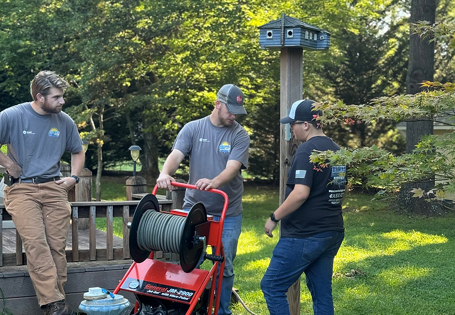
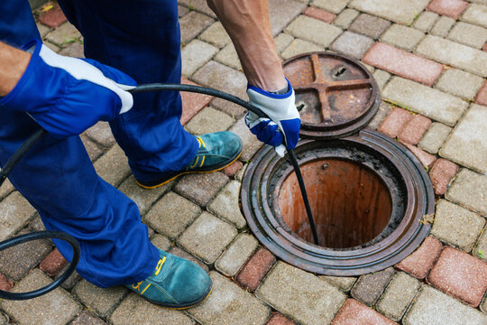
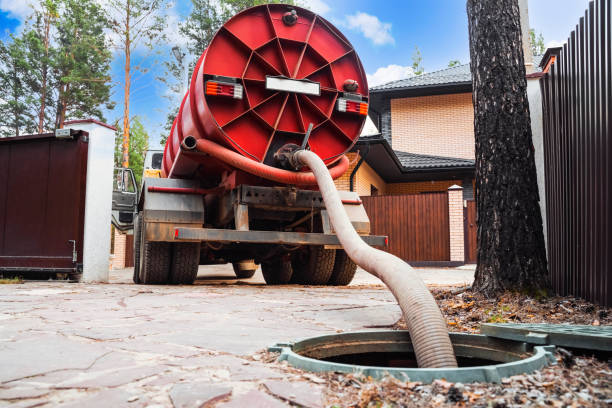
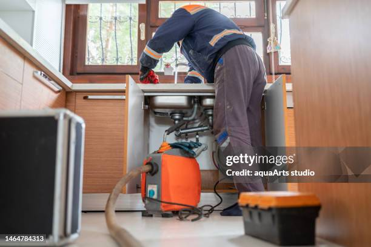
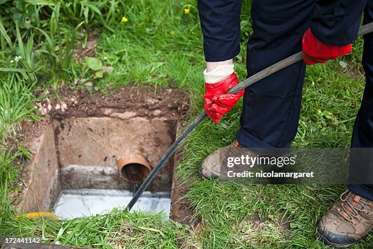
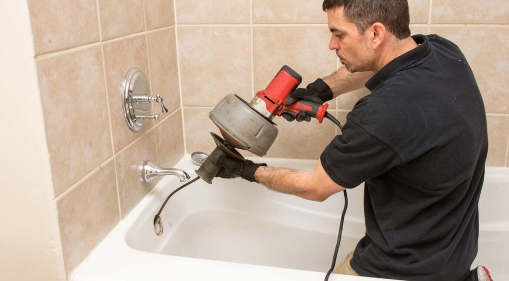

تقنية الكمبروسر — بدون تكسير
تسليك مجاري بالكمبروسر في الرياض
نحن متخصصون في فتح انسداد المجاري والبيارات بأحدث تقنيات ضغط الهواء العالي. خدمة سريعة، نظيفة، وبدون أي تكسير في منزلك. متواجدون لخدمتكم 24 ساعة.
نحن متخصصون في فتح انسداد المجاري والبيارات بأحدث تقنيات ضغط الهواء العالي. خدمة سريعة، نظيفة، وبدون أي تكسير في منزلك. متواجدون لخدمتكم 24 ساعة.

حلول متكاملة لمشاكل الصرف الصحي والسباكة باستخدام أحدث المعدات العالمية

استخدام ضغط الهواء العالي لفتح أصعب الانسدادات في المواسير الداخلية والخارجية.

تنظيف وتسليك غرف التفتيش والبيارات الرئيسية لضمان انسياب المياه بشكل طبيعي.

سيارات شفط ضخمة لتفريغ البيارات ومنع ارتداد المياه داخل المنزل.

أجهزة إلكترونية متطورة لتحديد مكان التسريب بدقة متناهية وبدون تكسير.

غسيل وتعقيم خزانات المياه لضمان مياه نظيفة وصحية لعائلتك.

فريق من السباكين المهرة لتركيب وإصلاح كافة شبكات المياه والصرف.
نجمع بين الخبرة الطويلة والتقنيات الحديثة لتقديم خدمة تفوق توقعاتكم
نحافظ على سلامة ديكورات منزلك وأرضياته باستخدام تقنيات الضغط الحديثة.
نمتلك معدات ألمانية تولد ضغطاً كافياً لتفتيت أصعب الدهون والترسبات.
نقدم ضماناً كتابياً على جودة العمل، ونعود مجاناً في حال تكرار المشكلة.
خطوات بسيطة وواضحة تضمن لك راحة البال
تواصل معنا واشرح المشكلة لنحدد لك التكلفة المبدئية.
يصلك فريقنا خلال 30 دقيقة مجهزاً بكافة المعدات.
يتم فحص الانسداد واستخدام الكمبروسر لحله فوراً.
نتأكد من انسياب المياه ونسلمك شهادة الضمان.
ثقة عملائنا هي سر نجاحنا المستمر لأكثر من 10 سنوات
"خدمة ممتازة وسريعة جداً. الفني كان محترم وشغلهم نظيف جداً وبدون أي تكسير في الحمام. أنصح بهم بشدة."
"جربت شركات كثيرة لكن المثالية هم الأفضل. حلوا مشكلة انسداد المطبخ اللي كانت متعبة جداً في وقت قياسي."
"فريق احترافي ومعداتهم حديثة جداً. السعر كان واضح من البداية وما كان فيه أي زيادة. شكراً لكم."
كل ما تريد معرفته عن خدمة تسليك المجاري بالكمبروسر